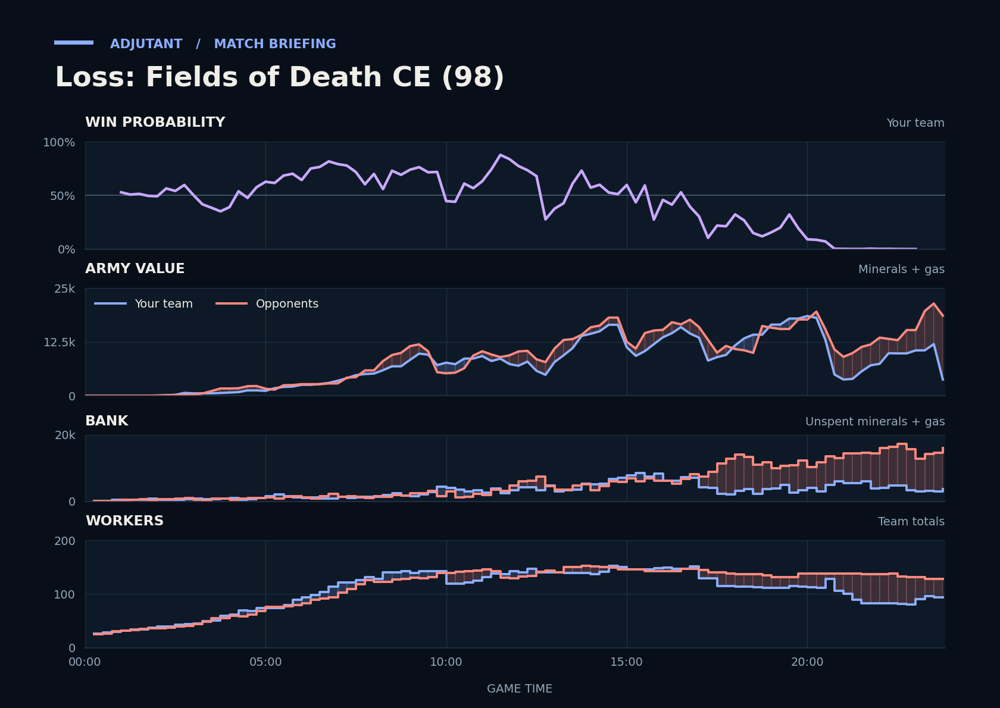

Loss: Fields of Death CE (98)
Provisional debrief. The full report (timeline, insights and analysis) is being generated.

Cached narration uses different analysis inputs (facts, engine notes, prompts or model settings). It has not been regenerated for this report.
**Loss.** The duo lost the even-army trade at TakeTheTip's fifth from 20:05, and the Drone losses left them far behind the opponents on workers and income by the end.
**Why**
- 16:24–18:21: Critter's Ultralisks and Hydralisks killed TakeTheTip's Drones and Hatcheries; TakeTheTip's income more than halved by 18:00.
- 20:05–21:42: Armies went in about even, but the duo lost the trade and 46 Drones; TakeTheTip's income later hit zero.
- 23:30–23:48: Facing 1.8x the army value, the duo lost more army than the opponents; Scallop typed gg.
Current engine analysis: Loss. Review 16:24–18:21: TakeTheTip lost 29 Drones to Ultralisks, Roaches and Lurkers; 3 of your town halls were destroyed. The biggest fight came at 20:05–21:42 (21,275 lost, 15,275 killed).